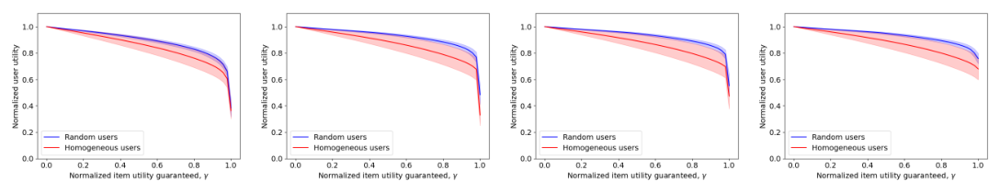

User-Item Fairness Tradeoffs in Recommendations (推荐系统中用户-物品公平性权衡)
- 会议/期刊: NeurIPS 2024
- 作者与机构: Sophie Greenwood, Sudalakshmee Chiniah, Nikhil Garg (Cornell Tech)
- 推荐链路定位: 推荐策略分配层（打分矩阵 → 约束优化 → 每用户推荐分布），非端到端排序网络
- 研究方向: 去偏公平、可信隐私与工业架构 / 冷启动与长尾推荐
- 论文原文: https://arxiv.org/abs/2412.04466v1
- 开源代码: https://github.com/vschiniah/ArXiv_Recommendation_Research
TL;DR (1分钟核心速览)
本文直面「物品公平约束必然伤害用户、但代价由谁承担未知」这一黑箱问题：将双边公平写成带物品公平约束的极小极大归一化效用规划，借由极值解的稀疏结构给出闭式刻画，导出两条现象——用户偏好越多样，物品公平越"免费"；偏好被误估的用户（冷启动）在最坏情形下会被公平约束推去消费全局最不受欢迎的物品。在 arXiv 论文推荐原型（13.9 万篇训练论文、14,307 篇冷启动物品、SPECTER/TF-IDF 打分）上，以凸优化求解 50 个公平强度 \(\gamma\)实测：\(\gamma \le 0.9\)时用户代价极小，\(\gamma \to 1\) 时代价陡增，且同质用户群的代价显著更高。
Background & Motivation (背景与核心矛盾)
- 主流范式: 每用户推荐预测效用最高的物品（\(\arg\max_j w_{ij}\)），或多边公平算法在目标函数中加不公平惩罚/加公平约束（Basu et al.、Wang & Joachims、Chen et al.）。
- 前人局限其一: 只优化"最热"，曝光极度塌缩——arXiv 实测中位情况下 超过 47% 的论文被推荐给任意用户的概率低于 \(0.0001\%\)，即便用户数与物品数相当。
- 前人局限其二: 多边公平工作只给算法不给刻画，无人回答"公平的价格是多少、由哪个用户付"，而闭式求解在任意效用矩阵下不可行（解依赖全局结构）。
- 核心洞察 (Key Insight): 用归一化最小效用（而非平均效用）作公平度量后，最优推荐策略在对称类型结构下具有稀疏支撑，于是非线性凹规划可退化为线性规划并解析求解，tradeoff 变成效用矩阵的函数。
- 本文切入点: 定义两个可测量指标——公平的价格 \(\pi^{F}_{U|I}\)与误估的价格\(\pi^{M}_{U}\)，先在理论上定符号与量级，再用真实数据"落地验证"。
Method (核心方法设计)
1. 整体框架 (Overall Architecture)
模型输入是平台对每个用户-物品对的效用估计矩阵 \(\mathbf{w}\in\mathbb{R}^{m\times n}\)（本文用论文摘要嵌入余弦相似度构造）；先做按"各自最优"的归一化，得到用户/物品侧的最小归一化效用\(U_{\min}, I_{\min}\)；再求解"最大化最差用户效用、同时要求最差物品效用不低于物品公平最优值的\(\gamma\)倍"的约束规划，输出每用户的推荐概率向量\(\rho_i\)。训练侧不涉及梯度学习，求解侧是凸优化（cvxpy + SCS），评估侧比较不同\(\gamma\)下的\(U_{\min}\) 曲线。
flowchart TD
A["论文文本嵌入 TF-IDF / SPECTER → 余弦相似度 w_ij"] --> B["归一化 U_i, I_j 与 min 聚合"]
B --> C["约束规划: max U_min s.t. I_min ≥ γI*_min"]
C --> D["稀疏极值解 ρ (每用户推荐分布)"]
D --> E["价格 of fairness / 价格 of misestimation 曲线"]2. 关键设计拆解 (Key Designs)
- 归一化双边公平规划（把"公平"变成可比较的比值）：若直接用原始效用，一个对所有用户都只有 \(\epsilon\)效用的劣质物品会因"绝对曝光均衡"被迫推给所有人。故做双侧归一化\(U_i = \frac{\sum_j \rho_{ij}w_{ij}}{\max_j w_{ij}}\)、\(I_j = \frac{\sum_i \rho_{ij}w_{ij}}{\sum_i w_{ij}}\)，消除效用尺度与"人人都不喜欢的物品"的干扰，再取\(\min\) 构成 egalitarian 目标：
公平的"价格"即 \(\pi^{F}_{U|I}(\mathbf{w}) = \frac{U^{*}_{\min}(\mathbf{w}) - U^{*}_{\min}(1,\mathbf{w})}{U^{*}_{\min}(\mathbf{w})}\)；误估的价格即\(\pi^{M}_{U}(\gamma,\mathbf{w},\hat{\mathbf{w}}) = \frac{U^{*}_{\min}(\gamma,\mathbf{w}) - U_{\min}(\hat{\rho}(\gamma),\mathbf{w})}{U^{*}_{\min}(\gamma,\mathbf{w})}\)。
- 稀疏结构定理（把凹规划降维成 LP）：约束本身也是另一个凹规划的最优解集，直接求解不可行。作者限定"同类型用户同分布"的对称策略集 \(S_{\text{symm}}\)（\(K\) 个用户类型），证明其满足唯一性条件，且基本可行解满足
即 \(nK\)个变量里至多\(n+K-1\)个非零、至多\(K-1\)个物品被跨类型共享。直觉：物品公平约束只逼迫少数"中间物品"承担均衡任务，其余物品仍可确定性投放，于是可用单纯形闭式反解\(\alpha\)（类型比例）。
- 两条理论结论与求解开销：定理 3（多样性红利） 在两类偏好互反的群体中证明 \(\pi^{F}_{U|I}(\alpha)\)关于\(\alpha\)（类型 1 占比）在\([0,1/2]\)递减、\([1/2,1]\)递增，即群体越异质、物品公平越"免费"；同质极端情形可手算得线性负关系\(U_{\min}+I_{\min}\le 1+\epsilon\)。定理 4（误估代价被公平放大） 当已知类型占比\(\beta>1/n\)且冷启动用户效用被估为全体均值时，无约束时\(\pi^{M}_{U}(0)\le 1/2\)，而满约束下对任意\(\epsilon\)存在效用配置使\(\pi^{M}_{U}(1)>1-\epsilon\)——冷启动用户"每项估计都偏弱"，公平约束恰好把他们推向无人要的物品。求解无负采样概念，60 次凸规划求解、每次子问题规模\(\sim 200\times 500\)，秒级。
Experimental Setup & Evaluation Protocol (实验设置与评估协议)
- 数据集与预处理: 采用 arXiv + Semantic Scholar 引用数据，物品侧严格冷启动（2020 年新论文仅有文本、无任何交互/引用）：
| 数据集划分 | #Users | #Items | #Interactions | 稀疏度/密度 | 特征/场景说明 |
|---|---|---|---|---|---|
| 偏好训练池 (pre-2020) | 178,260 | 139,308 | 作者-论文从属关系 | 极稀疏 | 论文摘要 → TF-IDF / SPECTER 嵌入 |
| 待推荐物品池 (2020) | — | 14,307 | 无（冷启动物品） | — | 仅标题/摘要文本 |
| 实验子采样池 | 20,512 | 14,307 | 余弦相似度矩阵 | — | 每轮抽 200 物品 × 500 用户 |
- 数据划分与防穿越 (Splitting Strategy): 全局时间戳切分（pre-2020 建模偏好 → 2020 论文为待推物品 → post-2020 引用作为标签），天然杜绝未来信息泄漏；用户侧另设模拟冷启动划分（随机屏蔽 10% 用户的全部历史，视为无数据）。
- 排名评测协议 (Ranking Protocol): 非传统 Top-N 排序评测，无 Recall/NDCG。效度检验用逐对 logistic 回归（相似度 \(w_{ij}\)→ 是否被引用）；主指标为凸优化求得的\(U_{\min}(\gamma)\)，\(\gamma\)取\([0,1]\)上 50 个等距点，异质/同质对比各重复 10 次并绘\(\pm 2\) 标准误。
- 对比基线与超参设置: 无 recommender 基线对标，比较维度为 ①效用估计器（Max/Mean × TF-IDF/SPECTER 四种），②公平准则（max-min / Nash welfare / max-sum-3-min），③群体构成（随机总体 vs. k-means 41 簇同质子群，每簇期望 500 用户）。
Key Experimental Results (实验关键数据)
1. 主实验对比 (Main Results)
效用估计器的效度检验（logistic 回归，因变量＝用户 post-2020 是否引用该论文）：
| 打分模型 | 系数 | Std. Err | z-value | Adjusted \(R^2\) |
|---|---|---|---|---|
| Max score, TF-IDF | 12.4100 | 0.058 | 212.178 | 0.08915 |
| Mean score, TF-IDF | 20.2122 | 0.131 | 154.835 | 0.04616 |
| Max score, SPECTER | 18.4557 | 0.250 | 73.695 | 0.1347 |
| Mean score, SPECTER | 16.2482 | 0.246 | 66.148 | 0.09085 |
四个模型系数均显著（\(p<0.05\)级别，\(z>66\)），说明用文本相似度作效用代理在稀疏引用事件上具备合理预测力；Max 聚合在两个嵌入空间下均优于 Mean（\(R^2\) 0.1347 vs 0.0909；0.0892 vs 0.0462），支持"取最大相似度更能刻画用户多元兴趣"的假设，主实验因而选用 Max+TF-IDF。
2. 消融实验 (Ablation Study)
原文该部分以图（Fig. 2–5）呈现，下表为对建模假设逐项松绑后的定性归因（未给数值表，不作数值臆造）：
| 松绑的假设 | 替代设定 | 结论 |
|---|---|---|
| 公平准则 = max-min 用户效用 | 换为 Nash welfare \(U_{NW}\) | 权衡形态保持（需处理\(U_{NW},I_{NW}<0\) 的约束改写） |
| 公平准则 = max-min | 换为 max-sum-3-min (\(k=3\)) | 权衡形态保持 |
| 用户/物品效用对称 \(w_{ij}\) 共享 | 物品效用改为用户效用与曝光的线性插值 | 相关性下降时，权衡与"多样性降低代价"结论仍稳健 |
| 群体同质性 | k-means 41 簇 vs. 随机总体 | 同质群体 tradeoff 曲线更陡，与定理 3 一致 |
| 效用完全已知 | 屏蔽 10% 用户（模拟冷启动） | \(\gamma=0\)时代价已高，\(\gamma=1\) 未进一步恶化 |
3. 关键实验发现 (Key Findings)
- 公平的价格呈"临界相变"：\(\gamma\in[0,0.9]\)区间内用户侧代价很小（\(\gamma\)增大而\(U_{\min}\)缓降），但\(\gamma\to 1\) 时曲线陡降——把物品公平推到理论最优几乎必然牺牲最差用户。
- 多样性红利被数据证实：同质簇（41 个 k-means 簇、每簇 ≈500 用户）的 tradeoff 曲线系统性高于 500 随机用户的异质总体，即群体偏好越分散，物品公平越接近"免费"；这与定理 3 的 \(\alpha\to 1/2\) 最优完全对应。
- 误估才是主要伤害源，而非公平约束：在 \(\gamma\approx 0\)处两条曲线（正确估计 vs. 误估）的落差已经很大，加满物品公平约束后落差反而略缩小——理论最坏情形（\(\pi^M_U\) 可任意大）在真实数据上体现为"代价早已饱和"，说明平台应先修冷启动估计再谈公平约束。

Highlights & Limitations (亮点、对比与审稿批判)
- 与代表作对比: 相较 Wang & Joachims（群体公平 + 物品曝光，算法导向）、Chen et al.（把公平的价格定义为平台收入的代价），本文把价格重新定义为用户侧公平的代价，并解释其由"偏好多样性"而非"目标错位"驱动；相较同期 Kleinberg & Meister 刻画"多少用户承受多少代价"的分布，本文聚焦最差单个用户并给出其与效用矩阵结构的闭式关系；相较 Liu & Burke"利用弱偏好用户消化冷门物品"，本文证明该现象在约束优化下会被自动且更激进地触发，是对冷启动用户的结构性伤害。
- 可迁移亮点: ① 用 max-aggregation 汇聚用户历史嵌入以刻画多元兴趣（\(R^2\) 提升 46%）；② "归一化 + 极小极大 + 稀疏结构 → LP 闭式"这一套路可直接搬到曝光配给、创作者激励等资源分配问题。
- 审稿级局限批判: ① 理论只覆盖单物品推荐、效用对称共享、2–3 类用户的极端配置，多物品列表与多类型群体的闭式性未知；② 实证为了凸优化可解只采样 \(200\times500\) 的子矩阵，且无线上 A/B 与真实点击反馈，物品冷启动设定也意味着结论尚未在"有交互噪声"的场景验证。
Rating (四维评分)
- 方法创新性 (Novelty): ⭐⭐⭐⭐ （把双边公平的"价格"从收入口径转到用户口径，并用稀疏极值结构拿到闭式解，理论上扎实且少见）
- 评估协议与实验扎实度 (Protocol & Experiments): ⭐⭐⭐⭐ （时间切分 + 引用标签 + 10 次重复置信区间设计干净，但属离线小规模子采样模拟，缺真实交互与线上验证）
- 写作与数学规范度 (Clarity & Rigor): ⭐⭐⭐⭐ （归一化、价格定义、定理条件与证明路径清晰，假设松绑放在附录并逐条讨论）
- 工业落地与复现价值 (Industrial & Practical Value): ⭐⭐⭐ （代码与数据管线已开源，凸优化求解秒级可上线；但需扩展到多物品列表与真实效用，工程侧仍属决策分析工具而非可直接部署的排序器）